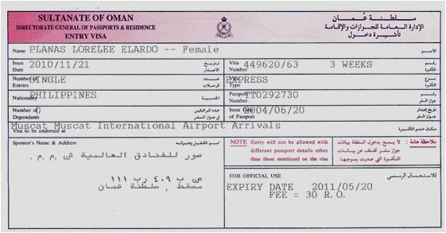
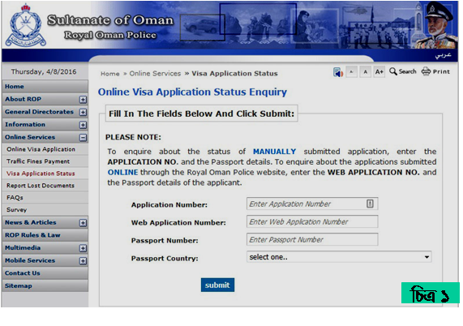
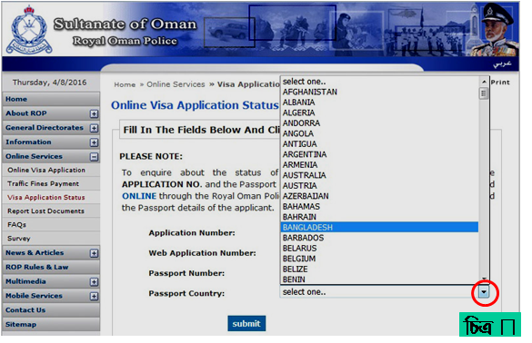

| রাষ্ট্রীয় নাম | : সালতানাত অফ ওমান |
| স্বাধীনতা | : ১৮ নভেম্বর, ১৬৫০ |
| সরকার | : রাজতন্ত্র |
| জনসংখ্যা | : ৪৬ লক্ষ |
| মুদ্রা | : রিয়াল (১ রিয়াল=২০৩ টাকা প্রায়) |
| আয়তন | : ৩,০৯,৫০০ বর্গ কিলোমিটার |
| ভাষা | : আরবী |
| ধর্ম | : ইসলাম (৮৬%) |
| প্রধান খাদ্য | : কাবাব, মাছ, ভাত, কফি, কফি, খেজুর |
| ফোন কোড | : +৯৬৮ |
| প্রধান শিল্প | : পেট্রোলিয়াম, গ্যাস, স্টিল, সিমেন্ট |
| সর্বোচ্চ তাপমাত্রা | : ৩২০ সেলসিয়াস |
| রাজধানী | : মাস্কাট |
| উল্লেখযোগ্য শহর | : সালালাহ, সোহার, সিব, বসার, ইবরি |
| বাংলাদেশ থেকে দূরত্ব | : ৩,৪০০ কিঃমিঃ |
| বাংলাদেশের সাথে সময়ের পার্থক্য | : ২ ঘন্টা (-) |
| বাংলাদেশী অভিবাসীর সংখ্যা | : ১,০৭,০০০ জন |
মাস্কট, ওমান
ওমানের ভিসা
ব্রাউজারের এ্যাড্রেস লেখার ঘরে http://www.rop.gov.om/VisaAppStatus/english/ লিখে কী-বোর্ডে এন্টার বাটনে চাপ দিয়ে ওয়েবসাইটে প্রবেশ করুন। নীচের উইন্ডোটি আসবে (চিত্র ১)।
ভিসার আবেদন ম্যানুয়ালি করে থাকলে Application Number আর অনলাইনে আবেদন করে থাকলে Web Application Number লিখুন। ৩ নম্বর ঘরে পাসপোর্ট নম্বর লিখতে হবে।
৪ নম্বর ঘরে ডান পাশের ছোট কালো ত্রিভুজে ক্লিক করলে একটি ড্রপ ডাউন মেনু আসবে। সেখান থেকে Passport Country হিসাবে দেশের নাম সিলেক্ট করুন। এরপর Submit বাটন ক্লিক করলে ভিসার অবস্থা জানা যাবে।